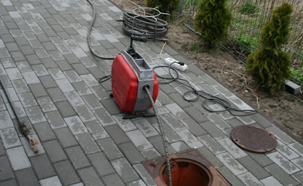
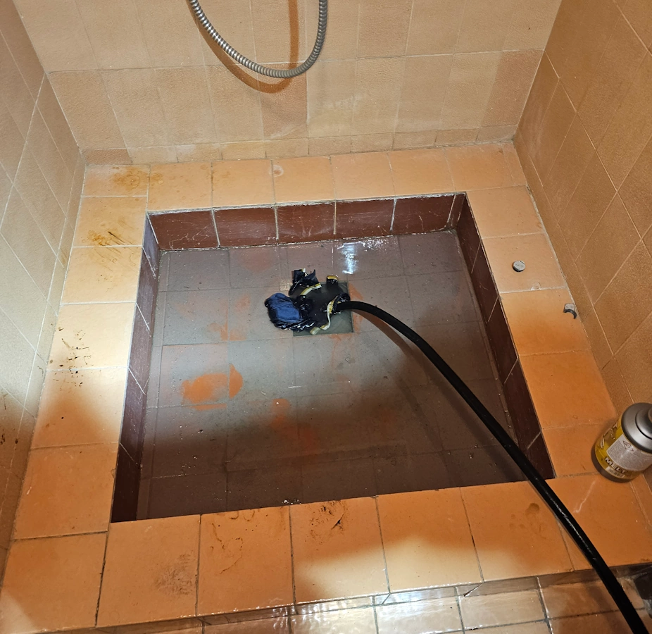

- Gwarancja jakości
- Doświadczenie
- Profesjonalizm
Warszawa – wszystkie dzielnice
Zobacz opinie w Google →

O firmie
Zapraszam do skorzystania z usług udrażniania rur i kanalizacji. Usuwam zatory w mieszkaniach, domach i lokalach usługowych – od zatkanego zlewu po niedrożny przykanalik.
Przez 8 lat pracowałem w MPWiK w Warszawie jako Specjalista ds. Diagnostyki i Hydrodynamicznego Czyszczenia Sieci. Czyściłem miejskie kolektory i przewody kanalizacyjne, których średnice liczy się w setkach milimetrów. Warszawską sieć znam od środka. Dosłownie. Ta praca nauczyła mnie jednego: każdy zator ma swoją przyczynę i swój sposób usunięcia.
Dziś prowadzę własną działalność. Dysponuję elektrycznymi sprężynami z kompletem końcówek roboczych, samochodem z pompą ciśnieniową WUKO oraz kamerą inspekcyjną do oceny stanu rur od wewnątrz. Sprzęt dobieram do instalacji, bo inaczej podchodzi się do odpływu w łazience, a inaczej do rury od szamba.
Wyróżnia mnie doświadczenie z dużej miejskiej sieci przeniesione do instalacji domowych oraz prosta zasada: cenę podaję przed rozpoczęciem pracy.
Zakres usług
Udrażnianie rur wewnątrz budynku – elektryczna sprężyna
- Udrażnianie zlewu i umywalki
- Udrażnianie odpływu wanny, prysznica i brodzika
- Udrażnianie zatkanej toalety (WC)
- Przepychanie pionów kanalizacyjnych
- Udrażnianie odpływu pralki i zmywarki
- Czyszczenie syfonów
Czyszczenie kanalizacji na zewnątrz – WUKO ciśnieniowo
- Udrażnianie przykanalika
- Przepychanie rury od szamba
- Czyszczenie kanalizacji deszczowej i studzienek
- Wypłukiwanie piasku, mułu i osadów z rur zewnętrznych
- Usuwanie korzeni wrastających do kanalizacji
Inspekcja kamerą
- Ocena stanu rury od wewnątrz: pęknięcia, wysunięte uszczelki, osad, korzenie, przedmioty w rurze
- Ustalenie miejsca, w którym siedzi zator
- Nagranie i zdjęcia z przeglądu przekazywane klientowi
Opinie klientów
Pani Dorota Sawicka
★★★★★
Woda przestała schodzić w kuchni wieczorem, rano miałam już wizytę. Pan odkręcił syfon, przeczyścił rurę sprężyną i po kłopocie. Czysto, sprawnie, bez śladu po pracy. Cena dokładnie taka, jaką podał przez telefon.
Pan Tomasz Grabowski
★★★★★
Zatkana rura między domem a studzienką. Przyjechał samochód z WUKO, całość została przepłukana ciśnieniowo, a na koniec obejrzeliśmy rurę kamerą – nagranie dostałem na telefon. Konkretny fachowiec, wszystko wytłumaczył. Polecam.
Pani Karolina Mazur
★★★★★
Toaleta zatkała się w niedzielę późnym wieczorem i zaczęło wybijać w brodziku. Pan odebrał od razu i przyjechał jeszcze w nocy. Zator w pionie usunięty, wszystko działa. Uratował nas przed zalaniem mieszkania. Polecam z całego serca.
Cennik
| Usługa | Cena |
|---|---|
| Udrażnianie zlewu / umywalki | od 350 zł |
| Udrażnianie odpływu wanny / brodzika | od 350 zł |
| Udrażnianie zatkanej toalety (WC) | od 350 zł |
| Przepychanie pionu kanalizacyjnego | od 450 zł |
| Czyszczenie rur metodą WUKO | od 450 zł |
| Udrażnianie przykanalika / rury od szamba | od 650 zł |
| Inspekcja kamerą | od 350 zł |
Dokładną cenę podaję przed przyjazdem, po krótkiej rozmowie o problemie. Bez ukrytych dopłat.
Najczęstsze pytania – udrażnianie rur w Warszawie
Jak szybko dojedziecie do zatkanej kanalizacji?
W większości przypadków jestem na miejscu w ciągu godziny od zgłoszenia. Pracuję całodobowo, także w weekendy i święta. Opisz problem przy zgłoszeniu – od razu podam termin i cenę.
Czym udrażniane są rury – sprężyną czy WUKO?
Wewnątrz budynku pracuję elektryczną sprężyną: maszyna wprawia w ruch spiralę z dobraną końcówką, która rozbija zator i czyści rurę od środka. Instalacje zewnętrzne – przykanaliki, rury od szamba, kanalizację deszczową – czyszczę ciśnieniowo metodą WUKO.
Czy po udrażnianiu zostaje bałagan w łazience lub kuchni?
Nie. Elektryczna sprężyna pracuje czysto – nie rozpryskuje zanieczyszczeń po podłodze i ścianach, jak to bywa przy udrażnianiu ręczną sprężyną. Po skończonej pracy pomieszczenie wygląda tak, jak przed moim przyjazdem.
Skąd wiadomo, ile będzie kosztować udrożnienie?
Cenę podaję przez telefon, przed przyjazdem. Zależy od kilku czynników: rodzaju zatoru, długości odcinka i miejsca w instalacji. Orientacyjne stawki znajdziesz w cenniku powyżej.
Czy z inspekcji kamerą dostanę nagranie?
Tak. Z przeglądu kamerą robię nagranie i zdjęcia wnętrza rury i przekazuję je klientowi. Taki zapis przydaje się przed remontem, w rozmowie z administracją budynku albo jako dokumentacja stanu instalacji.